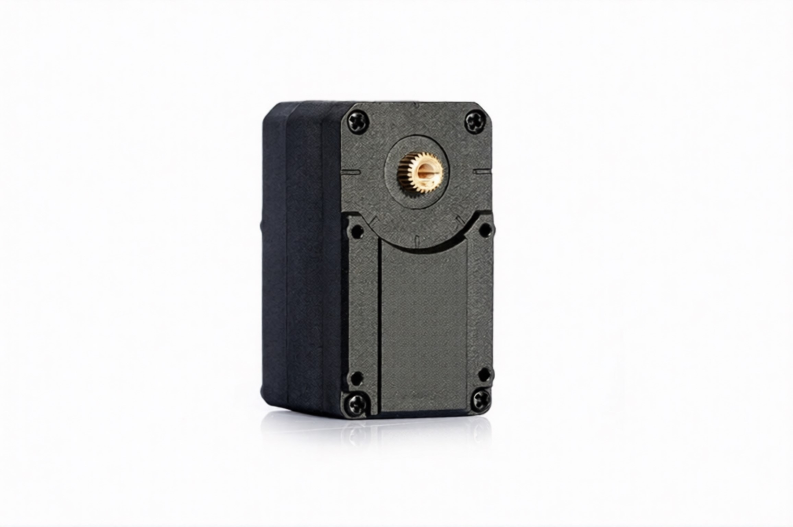
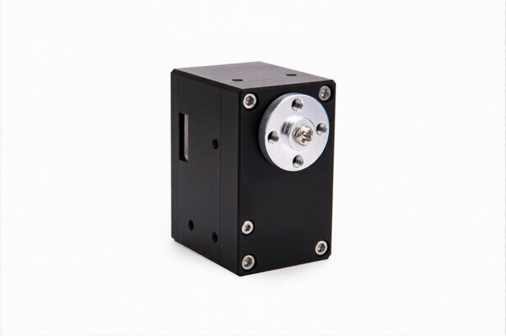
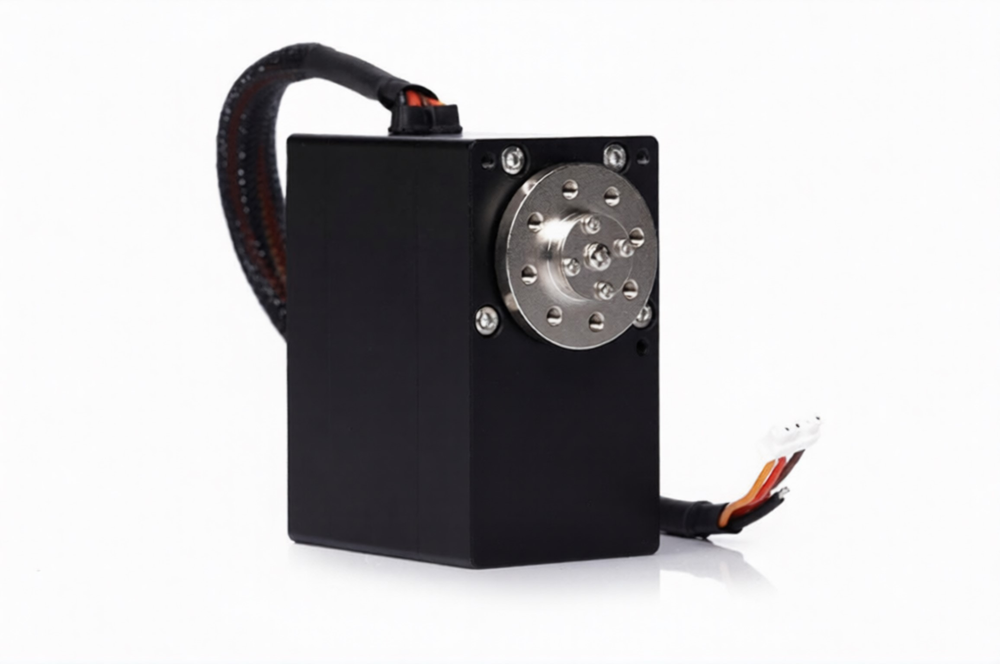
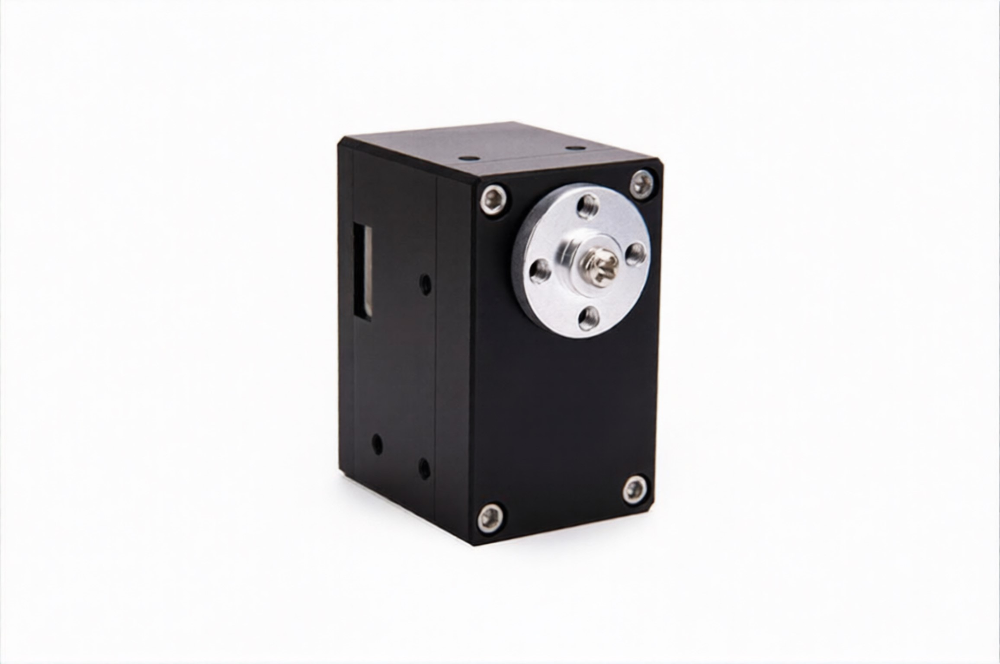
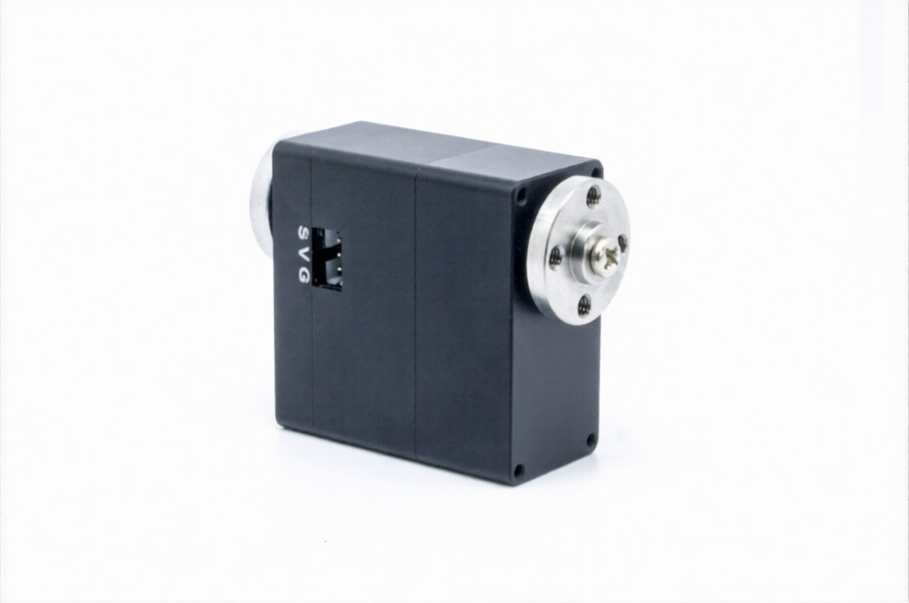
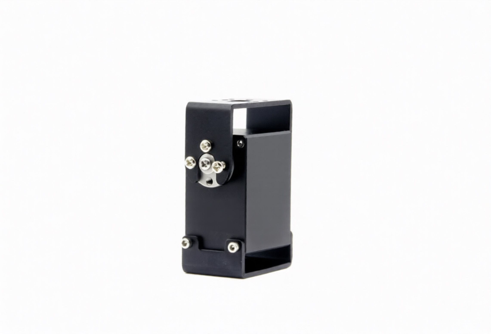

📷 Фото модели
KVT-30T
Компактный привод для лёгких манипуляторов и pan-tilt систем.
Страница моделиЛинейка Kavatronic — smart-сервоприводы с магнитным энкодером, шиной RS-485/TTL и обратной связью по положению, скорости и току. Подходят для манипуляторов, мобильных платформ, промышленной автоматизации и инженерных R&D-проектов.
Ниже — ориентировочное сопоставление моделей Kavatronic с популярными сервоприводами Dynamixel по моменту, напряжению, скорости и типу мотора.
| Модель Kavatronic | Аналог Dynamixel | Напряжение | Момент (kg·cm) | Скорость (RPM) | Протокол | Тип мотора |
|---|---|---|---|---|---|---|
| KVT-30T | MX-28 / XM430 | 12 V | 30 | 50 | TTL | DC |
| KVT-80R | MX-64AR | 12 V | 80 | 62 | RS-485 | BLDC |
| KVT-260R | XM540-W270 | 24 V | 260 | 52 | RS-485 | BLDC |
| KVT-40R | MX-64 класс | 12 V | 40 | 65 | RS-485 | BLDC |
| KVT-40D | XM430-W350 (нет double shaft) | 12 V | 40 | 85 | TTL | BLDC |
| KVT-65R | MX-64AR | 12 V | 65 | 135 | RS-485 | BLDC |
DC — щёточный мотор, BLDC — бесщёточный мотор.
Сопоставление носит ориентировочный характер и используется для предварительного подбора по классу задач и ключевым параметрам (момент, напряжение, скорость, тип мотора, интерфейс). Финальный выбор зависит от режима работы, механики узла, нагрузки, питания и требований к управлению.
Шесть моделей — от компактных сервоприводов для лёгких узлов до тяговых модулей для тяжёлых осей и промышленных механизмов.

Компактный привод для лёгких манипуляторов и pan-tilt систем.
Страница модели
Универсальный модуль для средних осей, колёсных платформ и робототехнических узлов.
Страница модели
Тяговый привод для тяжёлых осей, мощных шарниров и силовых механизмов.
Страница модели
Сервопривод общего назначения для робототехники, автоматизации и R&D.
Страница модели
Исполнение с double shaft для гибкой механической компоновки.
Страница модели
Высокоскоростной привод для быстрых разворотов и динамичных систем.
Страница моделиЧто находится внутри smart-сервопривода — от корпуса до шины связи.
Ниже — краткая схема основных узлов. Полный инженерный разбор вынесен в отдельную статью.
Это броня модуля. Защищает электронику от пыли, воды и ударов. Чем жёстче корпус и точнее подшипники, тем меньше люфт и выше ресурс.
Источник крутящего момента на входе редуктора. Щёточный (DC) — проще и дешевле, но требует обслуживания (щёточный узел, износ, помехи). Бесщёточный (BLDC) — выше ресурс, стабильнее в длительных режимах и лучше подходит для непрерывной работы.
Сам по себе мотор крутится слишком быстро и слабо. Редуктор превращает быстрые обороты мотора в медленное и сильное движение вала. В силовых узлах критичны материал и точность зубчатых пар, термообработка и смазка: это напрямую влияет на люфт, шум и ресурс.
Энкодер — это глаза привода. Без него он крутится наугад. Датчик отслеживает угол и скорость вала с точностью до долей градуса.
Встроенный компьютер. Принимает команды по шине, считает ПИД-регулятор и выбирает режим: Position, Velocity или Torque.
Берёт слабые сигналы от «мозгов» и превращает их в мощные токи для мотора. Обеспечивает плавный старт и экстренное торможение без сгорания.
Подключение питания (12–48 В) и шины данных (RS-485 или TTL). Одна шина — много сервоприводов. У каждого свой ID, как адрес в сети.
Опишите задачу и выберите модель — мы поможем подобрать сервопривод под ваш проект и ответим в течение 2 рабочих дней.
Если удобнее, можно написать напрямую:
Telegram: @kavatronic — для быстрых вопросов по выбору сервоприводов
Email: info@kavatronic.tech — для технических запросов и спецификаций
Ваше сообщение успешно отправлено. Мы свяжемся с вами в ближайшее время.